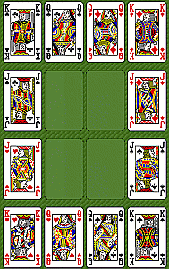

Remove all cards but picture cards (Jacks, Queens, and Kings). You have
won if your Tableau looks like this --

-- and your Stock and Waste are empty. The suits do not matter.
There are two phases to this game. Alternate between the two phases until game is lost or won. Start with Phase One until Tableau is completely filled. At that point, move to Phase Two. Please note that you cannot begin Phase Two unless Tableau is completely filled. At any point, you can return to Phase One, but remember that you cannot go back to Phase Two unless the tableau is once again filled. An exception to this rule is if the stock and waste are empty.
Phase One -- Click on the Stock to move a card into the empty Waste pile. If card is a:
Phase Two -- Remove 10's singly by clicking on them. Remove pairs that add up to 10 by dragging one card on top of its pair.
It is always safest in the middle. During Phase One of play, deal in the middle before going to the edges. If you see a possible pair, place that card on the edge so as to free more edge spaces during Phase Two of play.